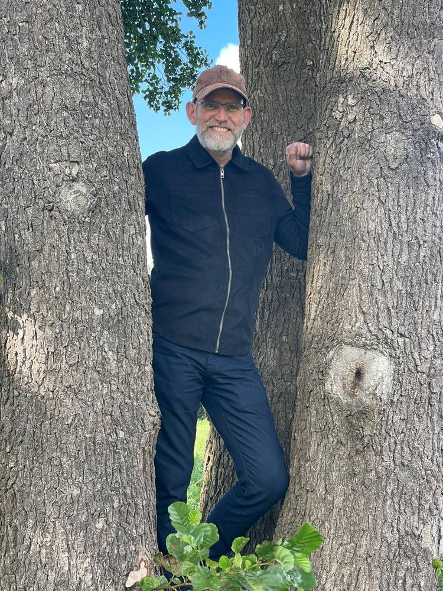

Even
voorstellen…
Ik ben Jan Roelofsen, coach en counselor bij Praktijk Boven Jan. Na jarenlange ervaring als maatschappelijk werker ben ik sinds 5 jaar ook EFT-counselor en geef ik de Houd me Vast-training. Ik help mensen en stellen die vastlopen weer verbinding te vinden — met zichzelf, en met elkaar.
“Ik wil dat jij bent.”
“Als mijn verlangen is dat jij jezelf kan zijn, en jouw verlangen is dat ik mijzelf kan zijn — dan hebben we werkelijk lief.”
Een luisterend oor, een heldere blik
Ik geloof niet zo in advies.
Wel in goede vragen. In mijn ervaring weten mensen vaak veel beter dan ze denken wat er speelt — ze hebben alleen iemand nodig die de ruimte openhoudt terwijl ze het uitzoeken.
Ik werk niet met protocollen of stappenplannen. Wat ik wel doe: aandachtig luisteren, doorvragen waar het spannend wordt, en benoemen wat ik zie gebeuren tussen jullie of in jou. Soms is dat confronterend. Meestal is het vooral een opluchting.
Betekenis: de moeilijkheden overwonnen hebben; genoeg verdiend hebben.
Hoe het werkt
Kennismaking
We bespreken vrijblijvend waar je tegenaan loopt en wat je zoekt in begeleiding.
Traject op maat
Samen stellen we een aanpak vast, individueel of als koppel, gericht op jouw vraag.
Verdieping en groei
In de sessies werken we stap voor stap aan meer verbinding, rust en begrip.
Waarmee ik je kan helpen
Relatiecoaching
Voor stellen die merken dat het gesprek is stilgevallen, of dat dezelfde ruzie steeds terugkomt in een ander jasje.
- Als jullie langs elkaar heen praten
- Na een breuk in het vertrouwen
- Bij een nieuwe fase — samenwonen, kinderen, uit huis
- Als je wilt weten of je verder wilt, of niet
Persoonlijke coaching
Voor wie vastloopt in werk, richting of in zichzelf, en merkt dat harder duwen niet meer helpt.
- Als je werk niet meer past maar je niet weet wat wel
- Bij twijfel over een grote keuze
- Als je steeds tegen hetzelfde patroon aanloopt
- Wanneer je wilt weten wat je eigenlijk zelf wilt
Houd me Vast
dé APK voor je relatie
Naast de gesprekken in mijn eigen praktijk geef ik samen met Jannie de Houd me Vast-training: acht avonden met een aantal andere stellen, waarin je stap voor stap werkt aan meer verbinding. Een compacte versie van EFT-relatietherapie — bedoeld voor stellen bij wie het niet crisis is, maar die er samen wel meer uit willen halen.
De training wordt georganiseerd door Onder Ons en is dankzij subsidie van de gemeente Veenendaal laag geprijsd. Aanmelden gaat via hen, en begint altijd met een kennismakingsgesprek.
Meer informatie en aanmelden bij Onder Ons →
Wat het kost
Kennismakingsgesprek
30 minuten · telefonisch of op locatie
Persoonlijke coaching
60 minuten
Relatiegesprek
90 minuten, samen
Wordt het vergoed?
Vaak wel, geheel of gedeeltelijk. Veel werkgevers hebben een opleidings- of vitaliteitsbudget waaruit coaching betaald kan worden, en voor ondernemers zijn de kosten in de regel zakelijk aftrekbaar.
Weet je niet zeker hoe dat bij jou zit? Vraag het gerust in het kennismakingsgesprek — ik denk graag mee en lever de factuur aan zoals jouw werkgever hem nodig heeft.
Neem gerust contact op
Heb je vragen of wil je een afspraak maken? Ik reageer graag persoonlijk, zonder verplichtingen.